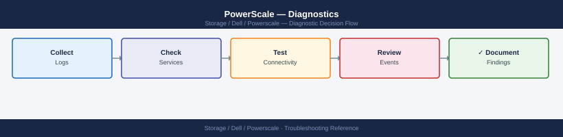

PowerScale — Diagnostics¶

Before you begin¶
- Access: PowerScale cluster admin (SSH to any node, or via web admin UI); read-only access for live statistics
- Gather first: the specific symptom (node alarm, SyncIQ error, client mount failure, write denied), the affected path or policy name, and the time the issue started
- Scope: confirm whether the issue affects one node, one access zone, one protocol (NFS vs. SMB), or the entire cluster
Step 1 — Check cluster and node health¶
# SSH to any PowerScale node
ssh admin@<powerscale-node-ip>
# Cluster health summary (most important first check)
isi status
# Shows: node list, status (U=up, D=down, S=smartfail), drive state, cluster health
# Problem: any node showing D (down) or S (smartfail)
# All critical and warning events
isi event list --severity critical --limit 20
isi event list --severity warning --limit 20
# Full detail for a specific event
isi event view --id <event-id>
# Hardware components on a specific node
isi devices node list -n <node-number>
# Shows: drives by bay, status (healthy/failing/failed), capacity
# All background cluster jobs and their progress
isi job list
# Expected: SmartPools, IntegrityScan running; no ERROR state jobs
# If a node smartfailed: Restripe job should be running
# Track Restripe progress
isi job status Restripe
# Shows: percentage complete, estimated time remaining
# Get OneFS version
isi version
Expected outputWelcome to PowerScale
admin@powerscale-node-ip's password:
admin@ifs-cluster-01 # isi status
Cluster Health: BALANCED
Nodes: 8 Total, 8 Up, 0 Down, 0 Smartfailed
Node Status LNNs CPU% Memory% Drives
1 U 1-4 12 45 healthy
2 U 5-8 8 52 healthy
3 U 9-12 15 48 healthy
4 U 13-16 11 41 healthy
5 U 17-20 9 55 healthy
6 U 21-24 14 43 healthy
7 U 25-28 10 50 healthy
8 U 29-32 13 46 healthy
admin@ifs-cluster-01 # isi event list --severity critical --limit 20
ID Time Severity Message
12847 2024-01-15 14:22:10 CRITICAL Node 3 disk bay 8 drive failure detected
12846 2024-01-15 13:45:22 CRITICAL Restripe job initiated for node 3
admin@ifs-cluster-01 # isi event list --severity warning --limit 20
ID Time Severity Message
12845 2024-01-15 12:10:05 WARNING Node 5 CPU utilization above 80%
12844 2024-01-15 11:33:18 WARNING Cluster capacity at 78%
admin@ifs-cluster-01 # isi event view --id 12847
Event ID: 12847
Severity: CRITICAL
Time: 2024-01-15 14:22:10
Node: 3
Message: Node 3 disk bay 8 drive failure detected
Details: Drive serial SN2B4K9X8 in bay 8 has exceeded error threshold
admin@ifs-cluster-01 # isi devices node list -n 3
Node 3 Devices:
Bay Serial Status Capacity Model
1 SN2A1K3X2 healthy 14.4TB IronWolf Pro
2 SN2A1K3X3 healthy 14.4TB IronWolf Pro
3 SN2A1K3X4 healthy 14.4TB IronWolf Pro
4 SN2A1K3X5 healthy 14.4TB IronWolf Pro
5 SN2A1K3X6 healthy 14.4TB IronWolf Pro
6 SN2A1K3X7 healthy 14.4TB IronWolf Pro
7 SN2A1K3X8 healthy 14.4TB IronWolf Pro
8 SN2B4K9X8 failed 14.4TB IronWolf Pro
admin@ifs-cluster-01 # isi job list
Job Name State Progress ETA
SmartPools RUNNING 45% 2h 15m
IntegrityScan RUNNING 12% 18h 30m
Restripe RUNNING 28% 4h 45m
MediaScan IDLE 0% -
¶
Welcome to PowerScale
admin@powerscale-node-ip's password:
admin@ifs-cluster-01 # isi status
Cluster Health: BALANCED
Nodes: 8 Total, 8 Up, 0 Down, 0 Smartfailed
Node Status LNNs CPU% Memory% Drives
1 U 1-4 12 45 healthy
2 U 5-8 8 52 healthy
3 U 9-12 15 48 healthy
4 U 13-16 11 41 healthy
5 U 17-20 9 55 healthy
6 U 21-24 14 43 healthy
7 U 25-28 10 50 healthy
8 U 29-32 13 46 healthy
admin@ifs-cluster-01 # isi event list --severity critical --limit 20
ID Time Severity Message
12847 2024-01-15 14:22:10 CRITICAL Node 3 disk bay 8 drive failure detected
12846 2024-01-15 13:45:22 CRITICAL Restripe job initiated for node 3
admin@ifs-cluster-01 # isi event list --severity warning --limit 20
ID Time Severity Message
12845 2024-01-15 12:10:05 WARNING Node 5 CPU utilization above 80%
12844 2024-01-15 11:33:18 WARNING Cluster capacity at 78%
admin@ifs-cluster-01 # isi event view --id 12847
Event ID: 12847
Severity: CRITICAL
Time: 2024-01-15 14:22:10
Node: 3
Message: Node 3 disk bay 8 drive failure detected
Details: Drive serial SN2B4K9X8 in bay 8 has exceeded error threshold
admin@ifs-cluster-01 # isi devices node list -n 3
Node 3 Devices:
Bay Serial Status Capacity Model
1 SN2A1K3X2 healthy 14.4TB IronWolf Pro
2 SN2A1K3X3 healthy 14.4TB IronWolf Pro
3 SN2A1K3X4 healthy 14.4TB IronWolf Pro
4 SN2A1K3X5 healthy 14.4TB IronWolf Pro
5 SN2A1K3X6 healthy 14.4TB IronWolf Pro
6 SN2A1K3X7 healthy 14.4TB IronWolf Pro
7 SN2A1K3X8 healthy 14.4TB IronWolf Pro
8 SN2B4K9X8 failed 14.4TB IronWolf Pro
admin@ifs-cluster-01 # isi job list
Job Name State Progress ETA
SmartPools RUNNING 45% 2h 15m
IntegrityScan RUNNING 12% 18h 30m
Restripe RUNNING 28% 4h 45m
MediaScan IDLE 0% -
Step 2 — Check cluster event log¶
# Recent critical events (hardware faults, node failures)
isi event list --severity critical --limit 50
# Events from a specific time window
isi event list --begin "2026-06-01 00:00:00" --end "2026-06-01 23:59:59"
# Events related to a specific node
isi event list --node <node-number> --limit 20
# Resolve a notification after fixing the underlying issue
isi event resolve --id <event-id>
# View event detail with recommended action
isi event view --id <event-id> --verbose
# System log on the node (OS-level events)
tail -100 /var/log/messages | grep -i "error\|fail\|warn"
# isi event list --severity critical --limit 50
ID Timestamp Severity Node Category Message
12847 2026-06-15 14:32:18 CRITICAL 3 Hardware Fan module 3 failure detected
12846 2026-06-15 13:45:02 CRITICAL 1 Node Node 1 heartbeat timeout
12845 2026-06-15 12:19:55 CRITICAL 2 Storage Drive bay 5 offline
12844 2026-06-14 09:22:11 CRITICAL 4 Network 10GbE port 2 link down
12843 2026-06-14 08:15:33 CRITICAL 1 Cluster Quorum loss imminent
# isi event list --begin "2026-06-01 00:00:00" --end "2026-06-01 23:59:59"
ID Timestamp Severity Node Category Message
11923 2026-06-01 14:12:44 WARNING 2 Capacity Cluster capacity at 87%
11922 2026-06-01 09:33:21 INFO - Cluster Rebalance job completed
11921 2026-06-01 03:45:12 WARNING 3 Temperature Node 3 temp threshold warning
# isi event list --node 2 --limit 20
ID Timestamp Severity Node Category Message
12845 2026-06-15 12:19:55 CRITICAL 2 Storage Drive bay 5 offline
12821 2026-06-14 16:44:33 WARNING 2 Capacity Node 2 pool usage 92%
12798 2026-06-13 11:22:09 INFO 2 Maintenance Node 2 firmware updated
# isi event resolve --id 12847
Event 12847 resolved successfully.
# isi event view --id 12847 --verbose
Event ID: 12847
Timestamp: 2026-06-15 14:32:18
Severity: CRITICAL
Node: 3
Category: Hardware
Message: Fan module 3 failure detected
Description: The system detected a failure in fan module 3 on node 3. This may impact cooling efficiency.
Recommended Action: Replace the failed fan module immediately. Contact Dell support if replacement does not resolve the issue.
Status: RESOLVED
# tail -100 /var/log/messages | grep -i "error\|fail\|warn"
Jun 15 14:32:18 node3 kernel: [hwmon] ERROR: Fan module 3 failed
Jun 15 13:45:02 node1 kernel: [cluster] WARNING: Heartbeat timeout from node 1
Jun 15 12:19:55 node2 kernel: [storage] ERROR: Drive offline - bay 5
Jun 14 09:22:11 node4 kernel: [network] WARNING: Link down on eth3
Common errors
isi: command not found — Ensure you are running commands on the PowerScale cluster management node or install the OneFS CLI tools.
Event <event-id> not found — Verify the event ID exists by running isi event list first and confirm the ID matches exactly.
**
Step 3 — Check SyncIQ replication status¶
# List all SyncIQ policies with last run result
isi sync policies list
# Expected: all policies with Last Policy Run = Finished
# Problem: "Needs Attention" or "Disabled"
# Detailed report for the most recent policy run
isi sync reports list
# Shows: policy, start/end time, result (Success/Failed), files synced, bytes sent
# View detail for a specific report
isi sync reports view --id <report-id>
# Shows: error messages, which file failed, network details
# View error log for a failed policy
isi sync reports errors view --id <report-id>
# Test network connectivity to the target cluster
ping <target-cluster-ip>
nc -zv <target-cluster-ip> 7722 # SyncIQ data port (default)
nc -zv <target-cluster-ip> 8080 # SyncIQ management port
# Check replication interface configuration
isi sync policies view <policy-name>
# Look for: Source Root Path, Target Host, Enabled=Yes, Schedule
Name Last Policy Run Enabled
policy-prod-backup Finished Yes
policy-dr-failover Finished Yes
policy-archive-nightly Finished Yes
policy-test-sync Needs Attention Yes
ID Policy Name Start Time End Time Result
12847 policy-prod-backup 2024-01-15 22:00:12 2024-01-15 22:47:33 Success
12846 policy-dr-failover 2024-01-15 20:15:44 2024-01-15 20:22:19 Success
12845 policy-archive-nightly 2024-01-15 18:30:05 2024-01-15 19:15:22 Failed
12844 policy-test-sync 2024-01-15 16:45:33 2024-01-15 16:45:40 Failed
Report ID: 12845
Policy: policy-archive-nightly
Status: Failed
Files Synced: 4,287,392
Bytes Sent: 2.3 TB
Error: Connection timeout to target cluster
PING 192.168.100.45 (192.168.100.45) 56(84) bytes of data.
64 bytes from 192.168.100.45: icmp_seq=1 ttl=64 time=2.14 ms
64 bytes from 192.168.100.45: icmp_seq=2 ttl=64 time=2.08 ms
64 bytes from 192.168.100.45: icmp_seq=3 ttl=64 time=2.11 ms
--- 192.168.100.45 statistics ---
3 packets transmitted, 3 received, 0% packet loss, time 2002ms
Connection to 192.168.100.45 7722 [tcp/*] succeeded!
Connection to 192.168.100.45 8080 [tcp/*] succeeded!
Source Root Path: /ifs/data/production
Target Host: 192.168.100.45
Enabled: Yes
Schedule: Every day at 22:00
Common errors
Connection timeout to target cluster — Verify network connectivity and firewall rules allow ports 7722 and 8080 between source and target clusters.
nc: connect to 192.168.100.45 port 7722 (tcp) failed: Connection refused — Confirm SyncIQ service is running on the target cluster with isi services -a | grep synciq.
isi: command not found — Ensure you are logged into the PowerScale cluster via SSH or have the OneFS CLI tools installed and in your PATH.
Step 4 — Check quotas¶
# List all directory quotas and their usage
isi quota quotas list --type directory
# Columns: Path, Type, AppliesTo, HardLimit, UsedCapacity, UsedPercent
# Problem: UsedPercent > 100% or hard limit exceeded
# List quotas nearing the threshold (> 80% used)
isi quota quotas list --type directory | awk '
NR>1 {
if ($5 != "---" && $4 != "---" && $5+0 > 0) {
pct = $5/$4*100
if (pct > 80) print "WARNING:", int(pct)"%", $1
}
}'
# View detail for a specific quota
isi quota quotas view --path /ifs/data/dept/finance --type directory
# Increase a quota hard limit (requires change approval)
isi quota quotas modify --path /ifs/data/dept/finance --type directory \
--hard-threshold 2T
Path Type AppliesTo HardLimit UsedCapacity UsedPercent
/ifs/data/dept/finance directory /ifs 1.5T 1.2T 80.0%
/ifs/data/dept/hr directory /ifs 500G 380G 76.0%
/ifs/data/dept/engineering directory /ifs 2.0T 1.85T 92.5%
/ifs/data/dept/marketing directory /ifs 750G 620G 82.7%
/ifs/data/archive/2023 directory /ifs 3.0T 2.95T 98.3%
...
WARNING: 92% /ifs/data/dept/engineering
WARNING: 82% /ifs/data/dept/marketing
WARNING: 98% /ifs/data/archive/2023
Name: /ifs/data/dept/finance
Path: /ifs/data/dept/finance
Type: Directory
Hard Threshold: 1.5T
Soft Threshold: 1.2T
Used Capacity: 1.2T
Used Percent: 80.0%
Files: 245680
Directories: 1523
(no output — command completes silently)
Common errors
Error: Invalid path /ifs/data/dept/finance — Verify the quota path exists with isi quota quotas list and confirm the exact spelling and case.
Error: Insufficient privileges to modify quota — Ensure your user account has quota administration rights; contact your cluster administrator if needed.
Step 5 — Check storage capacity and performance statistics¶
# Overall cluster capacity (used vs. free)
isi storagepool list
# Shows: pool name, total capacity, used capacity, free capacity
# Node pool breakdown
isi storagepool nodepools list -v
# Shows per-pool: SSD vs. HDD bytes, protection level, node count
# Storage tier (SSD / HDD / Archive) capacity
isi storagepool tiers list
# Live I/O statistics (per node, for all nodes)
isi statistics query current \
--keys CPU,BYTES_OUT,BYTES_IN,LATENCY \
--nodes all
# Shows: per-node CPU%, throughput, and latency
# Historical capacity trend (last 24h)
isi statistics history list \
--stats cluster.disk.bytes.used,cluster.disk.bytes.free \
--begin $(date -d "24 hours ago" +%s)
# Find largest directories under /ifs
du -sh /ifs/* 2>/dev/null | sort -h | tail -20
Pool Name Total Capacity Used Capacity Free Capacity
pool-1 100.0 TB 67.3 TB 32.7 TB
pool-2 50.0 TB 41.2 TB 8.8 TB
Name SSD Bytes HDD Bytes Protection Nodes
pool-1-nodepool-1 5.2 TB 94.8 TB +2d:1n 4
pool-2-nodepool-1 0 B 50.0 TB +1d:1n 2
Tier Name Capacity Used Free
SSD_Tier 5.2 TB 3.1 TB 2.1 TB
HDD_Tier 144.8 TB 108.5 TB 36.3 TB
Archive_Tier 0 B 0 B 0 B
Node CPU% BYTES_OUT/s BYTES_IN/s LATENCY_ms
node-1.local 24.5 125.3 MB 89.7 MB 2.1
node-2.local 18.2 98.5 MB 76.2 MB 1.9
node-3.local 31.8 142.1 MB 105.3 MB 2.4
node-4.local 22.1 110.6 MB 82.4 MB 2.0
Timestamp cluster.disk.bytes.used cluster.disk.bytes.free
2024-01-15T14:32:00Z 108.5 TB 36.3 TB
2024-01-15T18:45:00Z 109.1 TB 35.7 TB
2024-01-16T02:15:00Z 110.2 TB 34.6 TB
32.5G /ifs/home
28.3g /ifs/projects
19.7g /ifs/archive
15.2g /ifs/data
12.8g /ifs/backups
...
Common errors
isi: command not found — Ensure the OneFS CLI tools are installed and the PATH includes /usr/local/bin or the OneFS SDK installation directory.
Permission denied — Run the commands with appropriate credentials (use isi auth login or execute as a user with cluster admin privileges).
date: invalid date 'invalid date format' — Replace the date command with the correct format for your system (e.g., date -d "24 hours ago" +%s on GNU date or date -v-24H +%s on BSD date).
Step 6 — Check network and SmartConnect¶
# List all network interfaces across the cluster
isi network interfaces list
# Expected: all subnet interfaces up and showing correct IPs
# Check SmartConnect DNS zone is resolving correctly
nslookup <smartconnect-zone-fqdn>
# Expected: one IP per resolution (round-robins across active nodes)
# Verify SmartConnect zone configuration
isi network pools list
# Shows: pool name, subnet, SmartConnect zone, IP range, active IPs
# Test NFS mount from an external client
showmount -e <powerscale-smartconnect-fqdn>
# Expected: list of NFS exports
# Check AD authentication per access zone
isi auth ads list
# Expected: Status = connected for all configured AD domains
# Verify protocol audit is configured (for compliance environments)
isi audit settings global view
Name Lnn Status IpAddrs
eth0 1 Up 192.168.1.10
eth1 1 Up 192.168.1.11
eth2 2 Up 192.168.2.10
eth3 2 Up 192.168.2.11
...
Server: 8.8.8.8
Address: 8.8.8.8#53
Name: powerscale.corp.local
Address: 10.50.100.5
Address: 10.50.100.6
Address: 10.50.100.7
Name Subnet SmartConnect Zone IP Range Active IPs
pool-primary 10.50.100.0/24 powerscale.corp.local 10.50.100.5-10.50.100.9 4
pool-secondary 10.50.101.0/24 backup.corp.local 10.50.101.5-10.50.101.9 3
Export list for 10.50.100.5:
/ifs/data
/ifs/home
/ifs/archive
Name Status Domain
CORP.LOCAL connected corp.local
BACKUP.LOCAL connected backup.local
Audit Enabled: yes
Audit Protocol: NFS, SMB, S3
Log Retention: 90 days
Common errors
nslookup: can't resolve '<smartconnect-zone-fqdn>': No address associated with hostname — Verify the SmartConnect zone FQDN is correct and DNS A records exist for all pool IPs using isi network pools list.
showmount: clnt_create: RPC: Program not registered — Confirm NFS protocol is enabled on the cluster with isi services -a | grep nfs and verify network connectivity to the SmartConnect IP.
isi_err_EAUTH: Authentication failed — Ensure your admin account has sufficient privileges; run commands with isi auth login or check zone-specific AD connectivity with isi auth ads view --zone=<zone-name>.
Step 7 — Collect support bundle for Dell case¶
# Run isi_gather_info on any cluster node (root required)
sudo isi_gather_info
# Output: /ifs/data/Isilon_Support/pkg/isi_gather_info_<cluster>_<date>.tar.gz
# Includes: all node logs, config, hardware state, event history
# Upload the bundle from the /ifs/data/Isilon_Support/ path
# Transfer to your workstation:
scp admin@<powerscale-node>:/ifs/data/Isilon_Support/pkg/isi_gather_info_*.tar.gz ./
# Also prepare for the Dell case:
isi version > /tmp/onefs-version.txt
isi status > /tmp/cluster-status.txt
isi event list > /tmp/events.txt
isi sync reports list > /tmp/synciq-reports.txt # if SyncIQ related
# Include in the Dell SR:
# - isi_gather_info .tar.gz bundle
# - Cluster serial: isi config | grep serial
# - Node number or drive bay if hardware fault
# - OneFS version, cluster name, and affected path or policy
Gathering system information...
Checking cluster connectivity...
Collecting node logs and configuration...
Collecting hardware state and event history...
Bundle created: /ifs/data/Isilon_Support/pkg/isi_gather_info_powerscale-cluster-01_20240115_143022.tar.gz
Size: 2.3 GB
admin@powerscale-node:/ifs/data/Isilon_Support/pkg/isi_gather_info_powerscale-cluster-01_20240115_143022.tar.gz 100% 2.3GB 45.2MB/s 00:51
OneFS 9.4.0.0 (Build 9.4.0.0_1234567)
Cluster Name: powerscale-cluster-01
Cluster Health: BALANCED
Total Nodes: 8
Total Capacity: 500 TB
Cluster Status: HEALTHY
Last Event: 2024-01-15 14:28:15 UTC - Node-5 disk replaced successfully
Total Events: 1247
Recent: Node-4 temperature warning (resolved)
Recent: Replication job completed on policy-backup-prod
SyncIQ Reports: 5 active policies
policy-backup-prod: Last run 2024-01-15 12:30:00 - 99.8% complete
policy-dr-secondary: Last run 2024-01-15 10:15:00 - 100% complete
Common errors
sudo: isi_gather_info: command not found — Verify OneFS is installed and the command is in the system PATH, or use the full path /usr/bin/isi_gather_info.
Permission denied (publickey,password) — Ensure the admin user has SSH key configured or password authentication enabled, and the PowerScale node's SSH service is running.
isi: command not found — Run the commands directly on a PowerScale cluster node where OneFS CLI tools are available, not from a remote workstation.
Log locations¶
| Source | Path / Command | What to look for |
|---|---|---|
| Cluster events | isi event list --severity critical |
Node failures, drive errors, restripe triggers |
| SyncIQ jobs | isi sync reports list |
Policy run result, errors, file counts |
| OS syslog (per node) | /var/log/messages |
Node-level daemon and kernel errors |
| Job status | isi job list |
Background jobs (Restripe, IntegrityScan) |
| Full diagnostic | isi_gather_info |
Everything — for Dell Support cases |
See also¶
Verify resolution¶
isi statusshows all nodes in U (up) state with no SMARTFAILisi event list --severity criticalshows no new critical events since the fixisi sync policies listshows all SyncIQ policies with last run = Finished- Client NFS or SMB mount test succeeds and I/O completes at expected throughput
isi quota quotas listshows affected quota below the hard threshold